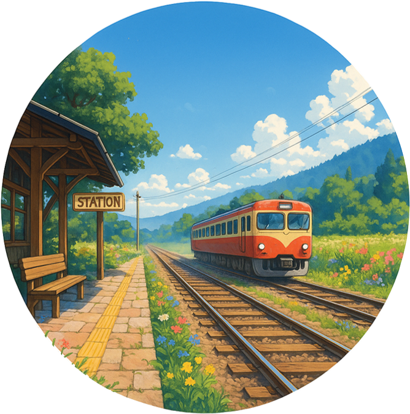

よろずごとゆっくり解説ch
IT・PC・技術史から身近な疑問まで、気になる話題をゆっくり形式で掘り下げて紹介しています。
TKの公開サイトおよび制作物のポータルページです。
FDライクなキーボード操作を軸にしつつ、Explorerに慣れたユーザーでも入りやすいマウス導線、タブ切替、マウスジェスチャーを備えたWindows向けファイラーです。
開発中のソースコードやその他の制作物は GitHub リポジトリにて公開しています。オープンソースプロジェクトやコード詳細はこちらからご覧ください。
IT・PC・技術史から身近な疑問まで、気になる話題をゆっくり形式で掘り下げて紹介しています。

短い物語や朗読を通じて、日常の途中で少しだけ立ち寄れるような時間をお届けしています。